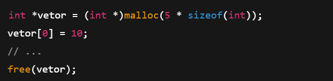
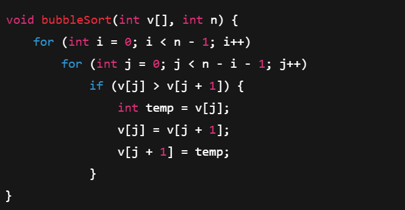
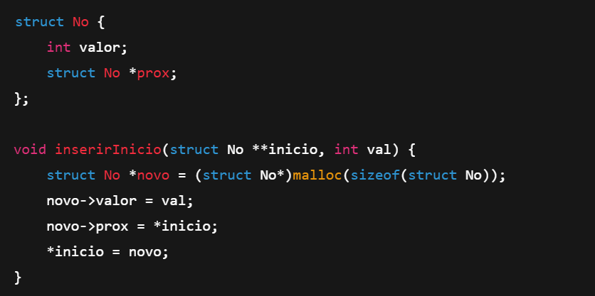
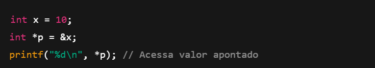
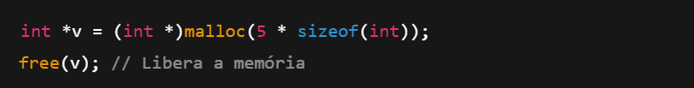

Estrutura de Dados
Professores Responsaveis:
Cristiano Pires Martins
Wllian Guimaraes Borges
A matéria de Estruturas de Dados é fundamental na ciência da computação, focando no estudo e implementação de formas eficientes de organizar e armazenar dados. Inclui o entendimento de estruturas como arrays, listas ligadas, pilhas, filas, árvores e grafos, cada uma adequada para diferentes tipos de operações e aplicações. A eficiência dessas estruturas impacta diretamente o desempenho dos algoritmos, sendo crucial para a resolução de problemas complexos e otimização de recursos em sistemas de software.
Estrutura de Dados em Linguagem C
1. Vetores (Arrays)
Conceito:
Um vetor é uma estrutura linear que armazena elementos do mesmo tipo em posições consecutivas de memória.
- tipos
- Vetores não ordenados: Elementos sem ordem específica.
- Vetores ordenados: Elementos organizados em ordem crescente/decrescente.
- Operações:
- Inserção, pesquisa linear/binária, exclusão.
- Algoritmos de ordenação: Bubble Sort, Selection Sort, QuickSort.
- Implementações:
- Array estático (tamanho fixo)
- Array dinâmico (alocado com malloc)
Array estático:
Array dinâmico com malloc:
Bubble Sort:
2. Structs
Conceito:
Structs permitem agrupar variáveis de tipos diferentes sob um único nome, representando entidades reais.
- Operações:
- Acesso com "." (direto) ou "->"(ponteiro)
- Passagem por valor ou por ponteiro
3. Listas Encadeadas
Conceito:
Estrutura dinâmica onde cada nó contém um valor e um ponteiro para o próximo nó
- Tipos:
- Simples: Ponteiro apenas para o próximo nó.
- Duplamente encadeada: Ponteiros para o próximo e o anterior.
- Circular: O último nó aponta para o primeiro.
- Operações:
- Inserção no início/fim, remoção, busca, percurso.
- Vantagens: Tamanho flexível, inserções/remoções eficientes.
Exemplo lista simples:
4. Pilhas
Conceito:
Estrutura LIFO (último que entra, primeiro a sair)
- Operações:
- push: Insere no topo
- pop: Remove do topo
- peek: Consulta o topo sem remover
5. Filas
Conceito:
Estrutura FIFO (primeiro que entra, primeiro a sair).
- Tipos:
- Fila simples
- Fila com prioridade
- fila circular (evita disperdicio de espaço)
- Operações:
- enqueue: Insere no valor
- dequeue: Remove do inicio
- peek: Consulta o inicio sem remover
6. Ponteiros
Conceito:
Variáveis que armazenam endereços de memória.
- Uso:
- Alocação dinâmica (mallock, free).
- Passagem por referencia e função.
- Estruturas de dados dinâmicas (listas, pilas e filas)
- Tipos:
- Ponteiro simples (*).
- Ponteiro duplo (**): Para modificar ponteiros dentro de funções.
Exemplo:
Alocação Dinâmica:
7. Alocação de Memória:
- Regiões:
- Stack: Variaveis locais.
- Heap: Alocação dinâmica (malloc, calloc, realloc).
- Boas práticas: Sempre liberar memória alocada (free)
8. Comparação entre Estruturas:
- Vetores VS Listas:
- Vetores: Acesso rápido por índice, tamanho fixo.
- Listas: Tamanho dinâmico, inserções/remoções eficientes.
- Pilhas vs. Filas:
- Pilhas: LIFO (último a entrar, primeiro a sair).
- Filas: FIFO (primeiro a entrar, primeiro a sair).